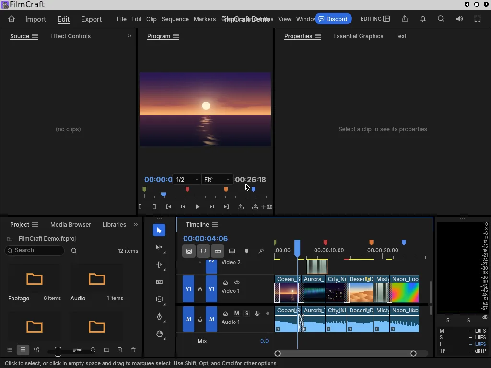
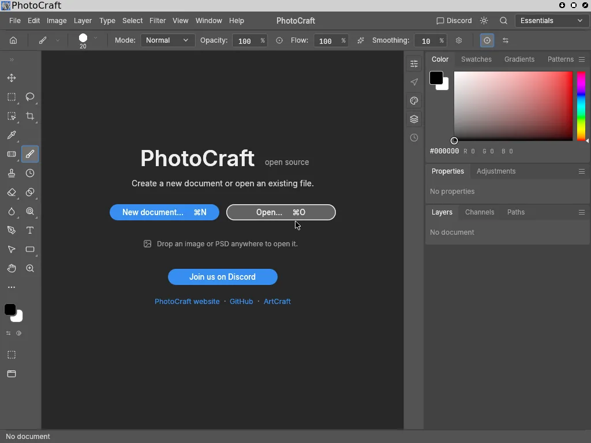

Attestation and signing allow apps to be distributed through GitHub. A release carries a signed attestation that ties each binary to the source and the build that produced it, so you can verify an app without a central app store.
Every app here also comes with a workflow an agent runs in a booted NixOS VM: the real binary, the real commands, the real session. A status only appears after that test has run, and each card shows when it last ran and against which commit. Re-run the test after an update and the card tells you whether your workflow survived it.
Passing on 2026-10-06 at Omnix-Linux/Fresh NixOS VM run (nix build .#checks.x86_64-linux.fhs --rebuild); test script finished in 29.3 s.
must succeed: /opt/node/bin/node -e 'require("zlib").gzipSync("x")'
must succeed: systemd-run --wait --pipe /opt/node/bin/node -e 'console.log(1)' (0.29 s)
test script finished in 29.34s
Patched on 2026-10-06 at Omnix-Linux/Fresh NixOS VM run on Omnix with its own envfs fix (proposed upstream as Mic92/envfs#233, shipped in the Omnix base by Omnix-Linux/Omnix#5). Stock envfs doesn't resolve names on readlink, so #!/usr/bin/python3 failed for this relocatable interpreter; with Omnix's envfs it runs.
must succeed: /opt/python/bin/python3 -c 'import ctypes.util as c; assert c.find_library("z")'
must succeed: /opt/python/bin/python3 -c 'import zoneinfo; zoneinfo.ZoneInfo("Europe/Moscow")'
must succeed: PATH=/opt/python/bin:$PATH /tmp/s.py | grep -qx 1
test script finished in 28.14s
Passing on 2026-10-06 at Omnix-Linux/Fresh NixOS VM run (nix build .#checks.x86_64-linux.desktop); plasmashell up 32 s after boot; test script finished in 72.3 s.
waiting for success: pgrep -u alice plasmashell (31.90 s)
must succeed: su - alice -c 'kreadconfig6 --file kwinrc --group Windows --key PerOutputVirtualDesktops'
must succeed: test -e /usr/lib/libgtk-3.so.0
test script finished in 72.29s
Platforms
x86_64-linux
flake.nix
inputs.omnix.url = "github:Omnix-Linux/Omnix";
inputs.atrium.url = "github:Omnix-Linux/Atrium";
# in your nixosConfiguration:
modules = [
omnix.nixosModules.default
atrium.nixosModules.default
];
Hyprland - Omarchy (stable)
Desktop
Passing
Omarchy's own Hyprland config, themes and scripts on the Omnix base, pinned to a stable release.
Details
workflow an agent verifies
Boot to the display manager and auto-login a new user
The user's config is seeded from Omarchy's templates (~/.config/hypr/hyprland.lua, omarchy-theme-set on PATH)
Hyprland starts on Omarchy's Lua config and opens its instance socket
Passing on 2026-10-06 at Omnix-Linux/Fresh NixOS VM run (nix build .#checks.x86_64-linux.stable); Hyprland 0.56.2 running Omarchy v4.0.4's config; test script finished in 70.9 s.
must succeed: grep -q OMARCHY_PATH /home/alice/.config/hypr/hyprland.lua
must succeed: su - alice -c 'command -v omarchy-theme-set'
hyprctl version: Hyprland 0.56.2 built from branch v0.56.2-b
test script finished in 70.94s
Platforms
x86_64-linux
flake.nix
inputs.omnix.url = "github:Omnix-Linux/Omnix";
inputs.autarchy.url = "github:Omnix-Linux/Autarchy";
# in your nixosConfiguration:
modules = [
omnix.nixosModules.default
autarchy.nixosModules.stable
];
FilmCraft 0.2.0
Video editor
Passing

Screenshot from the test run on 2026-10-06
ArtCraft's native Rust video editor, run from its unmodified GitHub release.
Passing on 2026-10-06 at Omnix-Linux/Fresh NixOS VM run (nix build .#checks.x86_64-linux.app-filmcraft) on the Omnix base with its desktop library preset; the screenshot above is from this run. Test added in Omnix-Linux/Omnix#3.
must succeed: /opt/filmcraft/bin/filmcraft-cli --version | grep -q 'filmcraft-cli 0.2.0'
must succeed: /opt/filmcraft/bin/filmcraft --version | grep -q 'filmcraft 0.2.0'
window: FilmCraft
must succeed: systemctl is-active filmcraft
test script finished in 26.68s
Passing on 2026-10-06 at Omnix-Linux/Fresh NixOS VM run (nix build .#checks.x86_64-linux.app-obs); the screenshot shows the first-run Auto-Configuration Wizard over the main window. Test added in Omnix-Linux/Omnix#3.
must succeed: obs --version
OpenGL loaded successfully, version 4.6 (Mesa llvmpipe)
window: OBS 32.2.2 - Profile: Untitled - Scenes: Untitled
must succeed: systemctl is-active obs
test script finished in 34.59s
Platforms
x86_64-linux
Add to your configuration
environment.systemPackages = [ pkgs.obs-studio ];
PhotoCraft 0.2.0
Image editor
Passing

Screenshot from the test run on 2026-10-06
Layered raster editing in a native Rust app. Run from its unmodified GitHub release.
Passing on 2026-10-06 at Omnix-Linux/Fresh NixOS VM run (nix build .#checks.x86_64-linux.app-photocraft); sha256 matched SHA256SUMS.txt; window “PhotoCraft”. Test added in Omnix-Linux/Omnix#3.
subtest: CLI and --version run
(finished: subtest: CLI and --version run, in 0.29 seconds)
subtest: main window appears
(finished: subtest: main window appears, in 12.80 seconds)
test script finished in 37.41s
Passing on 2026-10-06 at Omnix-Linux/Fresh NixOS VM run (nix build .#checks.x86_64-linux.app-vectorcraft); sha256 matched SHA256SUMS.txt; window “VectorCraft”. Test added in Omnix-Linux/Omnix#3.
subtest: CLI and --version run
(finished: subtest: CLI and --version run, in 0.17 seconds)
subtest: main window appears
(finished: subtest: main window appears, in 12.49 seconds)
test script finished in 40.61s
Passing on 2026-10-06 at Omnix-Linux/Fresh NixOS VM run (nix build .#checks.x86_64-linux.app-lightcraft); sha256 matched SHA256SUMS.txt; window “LightCraft”. Test added in Omnix-Linux/Omnix#3.
subtest: CLI and --version run
(finished: subtest: CLI and --version run, in 0.18 seconds)
subtest: main window appears
(finished: subtest: main window appears, in 12.90 seconds)
test script finished in 49.82s
Passing on 2026-10-06 at Omnix-Linux/Fresh NixOS VM run (nix build .#checks.x86_64-linux.app-printcraft); sha256 matched SHA256SUMS.txt; window “PrintCraft”. Test added in Omnix-Linux/Omnix#3.
subtest: CLI and --version run
(finished: subtest: CLI and --version run, in 0.09 seconds)
subtest: main window appears
(finished: subtest: main window appears, in 11.32 seconds)
test script finished in 34.73s
Passing on 2026-10-06 at Omnix-Linux/Fresh NixOS VM run (nix build .#checks.x86_64-linux.app-effectcraft); sha256 matched SHA256SUMS.txt; window “EffectCraft - Untitled Project.ecproj”. Test added in Omnix-Linux/Omnix#3.
subtest: CLI and --version run
(finished: subtest: CLI and --version run, in 0.06 seconds)
subtest: main window appears
(finished: subtest: main window appears, in 16.62 seconds)
test script finished in 37.74s
Passing on 2026-10-06 at Omnix-Linux/Fresh NixOS VM run (nix build .#checks.x86_64-linux.app-designcraft); sha256 matched SHA256SUMS.txt; window “DesignCraft”. Test added in Omnix-Linux/Omnix#3.
subtest: CLI and --version run
(finished: subtest: CLI and --version run, in 0.08 seconds)
subtest: main window appears
(finished: subtest: main window appears, in 11.24 seconds)
test script finished in 34.74s
Fetch kitty-0.49.2-x86_64.txz from the GitHub release, pinned by sha256
kitty --version reports kitty 0.49.2
Start kitty in an X11 session: as shipped it stops because /usr/share/X11/xkb is missing (the documented gap)
With XKB_CONFIG_ROOT pointed at xkeyboard-config it opens, OpenGL 4.6 (Mesa llvmpipe) loads, and it runs uname -a
Take a screenshot
Documented gapOmnix doesn't provide /usr/share/X11/xkb yet, so kitty's bundled xkbcommon can't find a keyboard layout and exits. Setting XKB_CONFIG_ROOT works around it; the fix is for the Omnix desktop preset to provide xkeyboard-config's share/X11 at /usr/share/X11.
Known gap on 2026-10-06 at Omnix-Linux/Fresh NixOS VM run. As shipped, kitty fails at startup on Omnix because /usr/share/X11/xkb is missing; with XKB_CONFIG_ROOT set it runs normally. Test added on Omnix branch apps-desktop-tests.
xkbcommon: ERROR: failed to add default include path /usr/share/X11/xkb
[glfw error 65544]: Failed to initialize XKB context
GLFW initialization failed
(with XKB_CONFIG_ROOT) kitty 0.49.2, window opened, ran uname -a
test script finished in 42.15s
Passing on 2026-10-06 at Omnix-Linux/Fresh NixOS VM run. The test VM has no network, so the screenshot shows Signal's “Failed to connect to server” page rather than the link-device screen. Test added on Omnix branch apps-desktop-tests.
Passing on 2026-10-06 at Omnix-Linux/Fresh NixOS VM run as a normal user with the sandbox on. The test VM has no network, so the screenshot shows Slack's “cannot connect” page. Test added on Omnix branch apps-desktop-tests.
Slack 4.51.180, linux 6.18.54 on x64
window: Slack
test script finished in 51.77s
An app is listed for the workflow a test runs, not for a line in a feature list.
Every status links to a test
Passing, patched, known gap and failing all point at the NixOS test file and the commit it ran against. The page build refuses a status without one.
Re-run after every update
When Omnix, nixpkgs or the app changes, an agent re-runs the test and records the new result, so you can see whether a workflow that worked yesterday still works after the upgrade.
Rollback when an update breaks one
A failing workflow is a reason to stay on, or boot back to, the previous generation until it is fixed.
Agent-maintained
An agent adds an app by writing a test and a registry entry, running it, and recording the result. No hand-edited badges.
No special packaging
Apps run as unmodified upstream binaries through the Omnix standard filesystem layer: /lib64, /usr/lib, ldconfig and envfs.